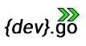

Devgo, and it is Acomplished!
Ez2ID Product Documentation
 EZ2ID is an iOS Application developed by DevGo, to provide integrations features with Microsoft Office 365 from an Apple device phone allowing companies employees to extends contact list funcionalitity in terms of Call identification, Manage contacts, Afasdf, Aasdfasdf and Asdfasdfasd. All this being away from the compnay but with access some usefull funciontalities you have in Office 365.
an inventory and classification solution to data on folders and files stored in an on-premise file server. Here you will find all Software documentation and detailed information on use and configuration required.
EZ2ID is an iOS Application developed by DevGo, to provide integrations features with Microsoft Office 365 from an Apple device phone allowing companies employees to extends contact list funcionalitity in terms of Call identification, Manage contacts, Afasdf, Aasdfasdf and Asdfasdfasd. All this being away from the compnay but with access some usefull funciontalities you have in Office 365.
an inventory and classification solution to data on folders and files stored in an on-premise file server. Here you will find all Software documentation and detailed information on use and configuration required. The software main goal is to provide support tools to be used on File Servers data migration process. With all the features allowing organize, classify and labeling file serves network shares contents based on the metadata for files and folders this is the better option to move on-premise servers contents to a cloud service in fast, reliable, secure and with minimum workload effort.
Overview
We want to deliver support tools that allow a smooth transition between on-premises network file servers to cloud. The main issue with this transition on most companies is using the current available automation tools to copy data volumes still needs a lot of human and hands tasks. We aim to bring to the mininum as possible the needed task and let the automation tools works as smooth as possible.
Most tools used for data copy must have the input in a specific format, but theirs is no means that allows one to create an underlined structured of the data from a company organization view, identify orphan data or set data ownership in an end-user friendly approach. Ez2Cloud was designed and implemented to address these issues. It is possible to export from Ez2Cloud a file formatted and ready to be used by an automation process with the minimum human intervention. Different from existing solutions on this, Ez2cloud will allow you to include metadata and so set a clear and concise view of structure, ownership and custom labels you want to apply to a shared network data on a file server.
All the configurations tasks, settings definitions, customizations and requirements to complete before running E2Cloud on your company will be the content of the following sections. Follow the links on specifics and detailed content that one will need to get up and running with Ez2Cloud.